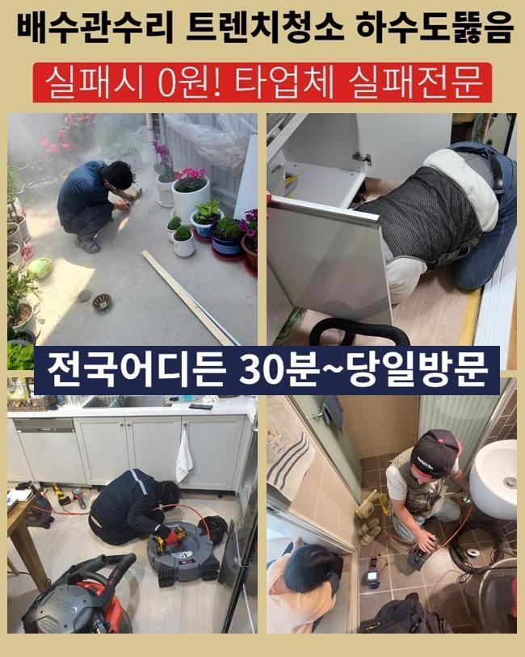
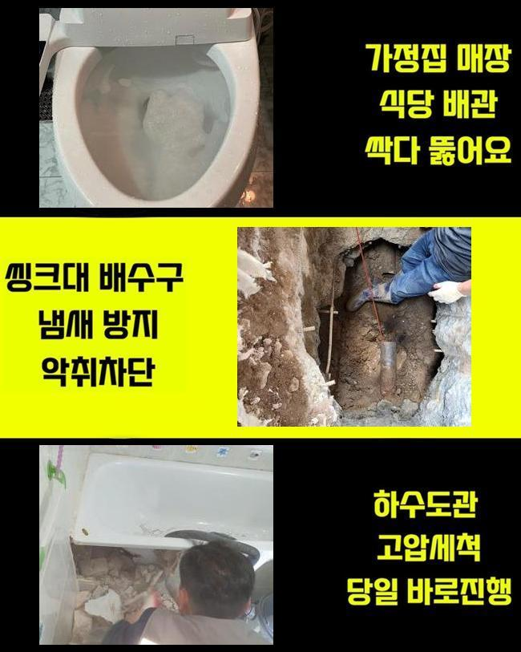
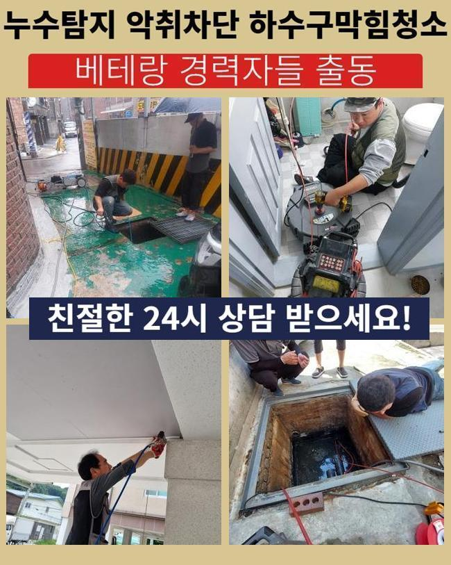
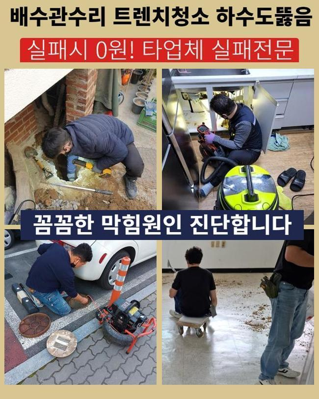
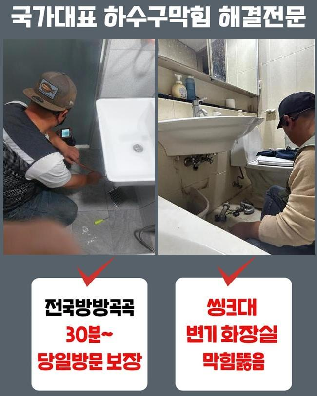
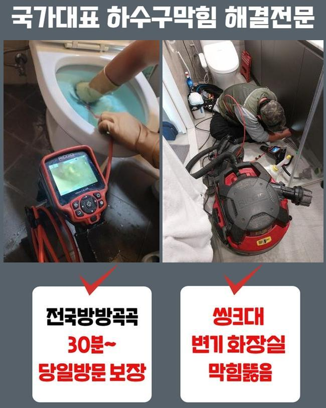

🏠 천안 용곡동변기배관막힘 일봉동 맨홀막힘 설비공사
천안 일봉동 변기막힘 전문 시공 후기

📋 작업 개요
- 위치: 천안 일봉동, 일봉동, 천안
- 서비스 유형: 변기막힘, 하수구막힘, 배관막힘, 맨홀막힘, 집수정막힘, 역류해결, 배관청소, 고압세척, 설비공사
- 작업 일시: 2025. 1. 26. 20:20
- 업체명: 하수구수사대 (010-5615-2118)
🔍 문제 상황
천안 용곡동변기배관막힘 일봉동 맨홀막힘 설비공사
얼마전 물막힘이 생겨 여러 피해를 받으셨던 고객분에게 문의를 받게되었어요
의뢰인분은 배수관에 대한 전문성을 띄고 계시진않았지만 약간은 지식들은 답습한 것이였죠
의뢰자분은 캡이나 여타 부품들을 닦아주고 막힌 스팟을 찾으려고 관찰했지만 어디부분이 시발점인것인지 인지하지 못해 저희들에게 문의하셨던 것이였죠
계신 곳에 도착하니 지속적인 셀프대처로 지치셨던것이 눈에 띄었어요
고객들의 경우 확실한 근원들을 짚어내기 힘든 경우들이 많아요
도착하여 배수관을 진단하니 내측엔 증상은 없었습니다
고객분은 공용관로에서 원인들이 자리했을 확률이 있다고 생각하게 되었어요
바깥쪽에 나무등이 자리한 상태라면 하수관으로 말리거나 여러 폐기물들이 빠질 가능성들이 존재합니다
많은 이유로 바깥쪽의 관로들이 막히게될 수 있어요

🔎 원인 분석
💡 전문가 진단: 정밀 진단 장비를 사용하여 슬러지의 고착 여부를 판명하고 타격/세척 작업을 실시했습니다.
고객에게 지금 의심하는 까닭들을 일러드리고 바깥쪽을 진단해줄것을 안내드렸어요
의뢰인분도 해당 사항을 들으신 뒤 메인 하수 시스템 진단에 동의했습니다
시정을 착수하기 이전에 기기의 점검도 빠트리지 않았어요
배수장애의 이유는 한두가지가 아닌데요
외부설비의 경우 담배꽁초와 같은 주변에서 유입된 잔해물이 관로로 축적됩니다
더군다나 비가 내릴때 바깥쪽 하수시스템들의 상황들을 소홀히 하면 증상은 점점 커질거에요
또한, 나무의 하수관으로 침투되는 현장도 흔하게 발생해요
배수관을 감싼다거나 더불어 표면손실 이슈도 발생케하죠
해당 문제에서는 배수자체가 정체되어 2차적인 피해들이 벌어지게돼요
그리고 노후이슈가 있다거나 파손에도 배수가 막혀버려 막힐 수 있어요

🔧 작업 과정
시간들이 흐르며 배수관이 부식되면 이물이 침전되는 조건이 갖춰져요
마지막으로서 일반적인 통수오류의 까닭들은 때에 맞춘 관리를 안하기 때문이에요
시기적절하게 소홀히 하면, 작은 여러 폐기물들이 누적되며 막혀버리게 되는 상황들이 수렁으로 빠집니다
결과적으로는 밖의 배관상황들을 시기적절하게 점검하고 청소시키는게 예방으로서의 괄목할만한 방식이죠
이런저런 까닭들을 인지하시고 선제적으로 대비해주는게 우선입니다
내시경으로 외측의 관로등의 실태를 체크해봤습니다
내시경장치로 확인하니 하수도의 군데군데마다 잔재와 기름성분들로 막혀버린것이 눈 앞에 펼쳐졌어요
이와같이 배수관이 막힌다면 물의 흐름들이 불가하여 역류까지 나타나기에 대처를 고려하는게 필요합니다
검수과정 중 여러 폐기물들이 누적된 지점을 타겟하여 청소키로 결론 지었어요
고압분사방식을 이용하여 강한 힘으로 시설물들을 구석까지 세척했습니다
뭉쳐있던 이물들을 안에서부터 제거시키니 막힌상태의 하수가 흘렀는데요
입구쪽에서부터 잔재들이 흘러나왔고 이물이 나오게되며 집수정으로 원활히 본 모습을 되찾았어요
물이 수월하게 빠지게되는 모습까지 확인하며 고객분도 해당 과정들을 관찰하셨어요
청소들이 완료되고 고객과도 소통하면서 여러 폐기물들이 쌓이는 까닭들을 말했더니 고객분도 평소 궁금해했던 사안을 물으셨습니다
이로써 의뢰자께서는 관리와 연관된 중요도를 인지하셨고 미래에도 정기성을 갖춘 점검들의 불가피성을 공감해주셨어요
성황리에 청소들이 끝나고 하수관이 완전히 바로 잡히면서 고객분은 통수되는 과정까지 체크했죠


✅ 작업 완료
고객님에게도 결과와 관련한 내용을 이해시켜드리고 지속적으로의 관리에 관해서도 안내했답니다
때때로 바깥쪽을 살펴보고 필요 시 전문진들의 해결들을 꾀하는게 좋을것이라는걸 말씀드렸어요
최종적으로 고객께서 불편을 해결해드려서 다행스러웠네요
고객의 문제없는 배수상황에 이상이 생기지 않게 때에 맞춰 저희쪽으로 상담을 진행해보세요



⚠️ 하수구 배관 막힘 예방 및 관리 가이드
- ✅ 머리카락, 비닐, 물티슈 등 물에 분해되지 않는 이물질은 하수구 유입을 절대 금지해 주세요.
- ✅ 하수구 거름망을 씌우고 모여진 이물질은 주기적으로 쓰레기통에 바로 비워주셔야 합니다.
- ✅ 배관 노후가 심할 경우 이물질이 더 쉽게 걸리므로 주기적인 배관 세척(고압세척 등)을 권장합니다.
- ✅ 작업 후 1년 이내 재발 시 하수구수사대에서 무상 A/S 보증 서비스를 제공합니다.
💡 핵심 정리
- 확실한 장비 작업(내시경 점검 및 샤프트 스케일링)으로 원인을 뿌리 뽑습니다.
- 작업 후 1년 이내에 동일한 부위 재발 시 100% 무상 A/S 서비스를 보장합니다.
- 서울 · 경기 · 인천 전 지역에 24시간 언제든 긴급 출동할 수 있도록 항시 대기 중입니다.
❓ 자주 묻는 질문 (FAQ)
🚨 천안 일봉동 변기막힘 문제로 고민이신가요?
정확한 원인 진단과 확실한 시공으로 재발 없는 해결을 약속드립니다.
24시간 긴급 출동 | 서울 · 경기 · 인천 전지역 | 1년 내 재발 시 무상 A/S